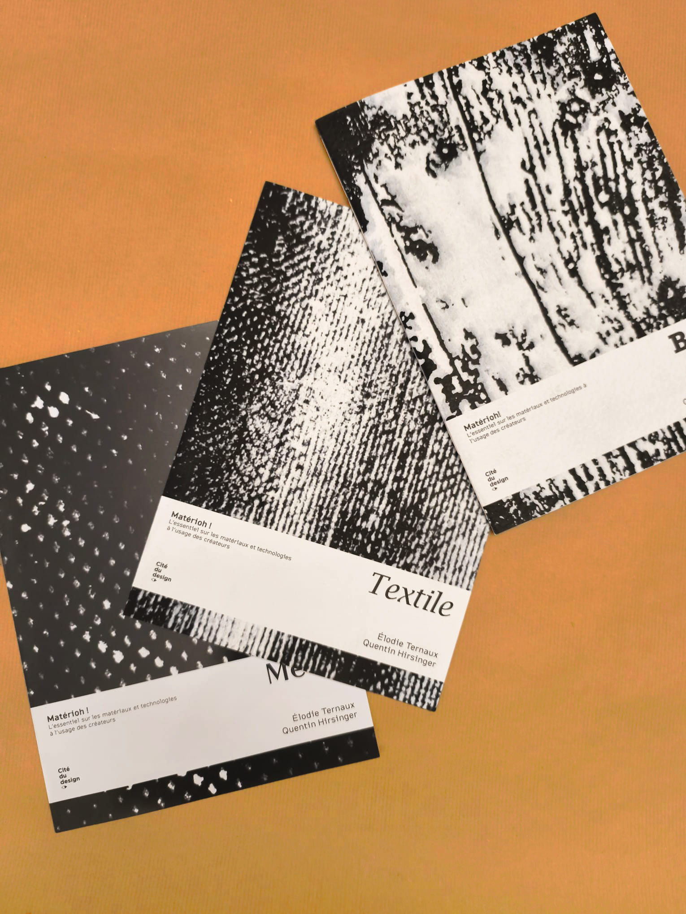
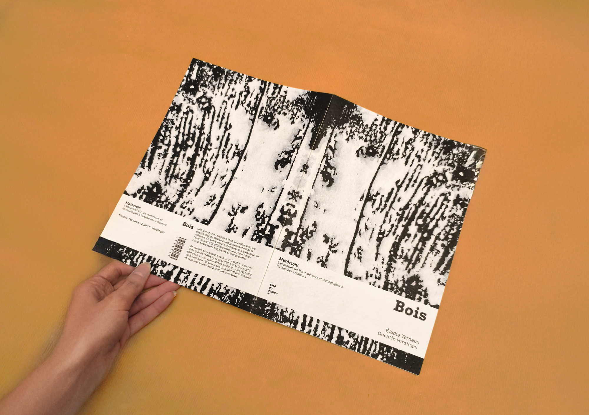
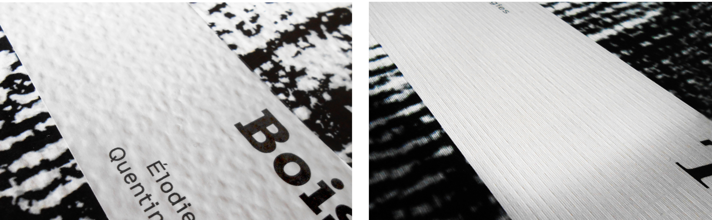
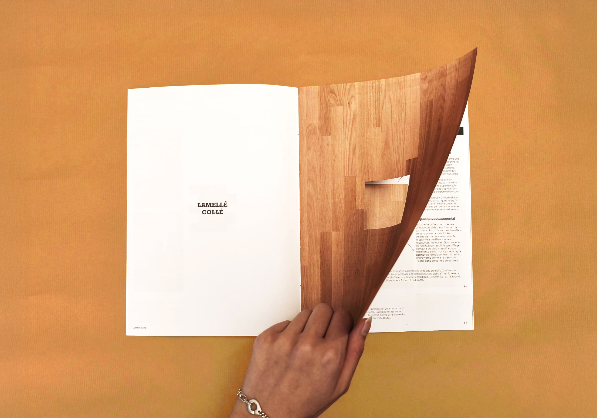
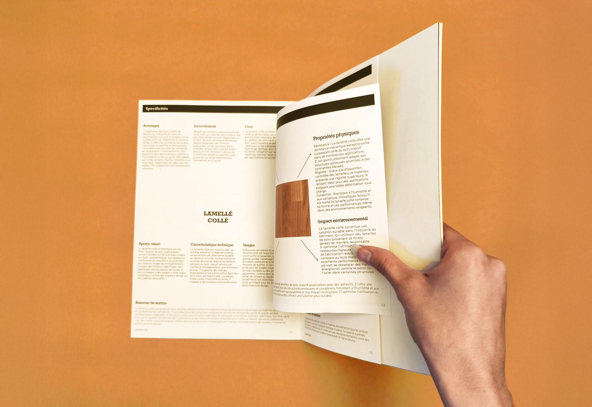
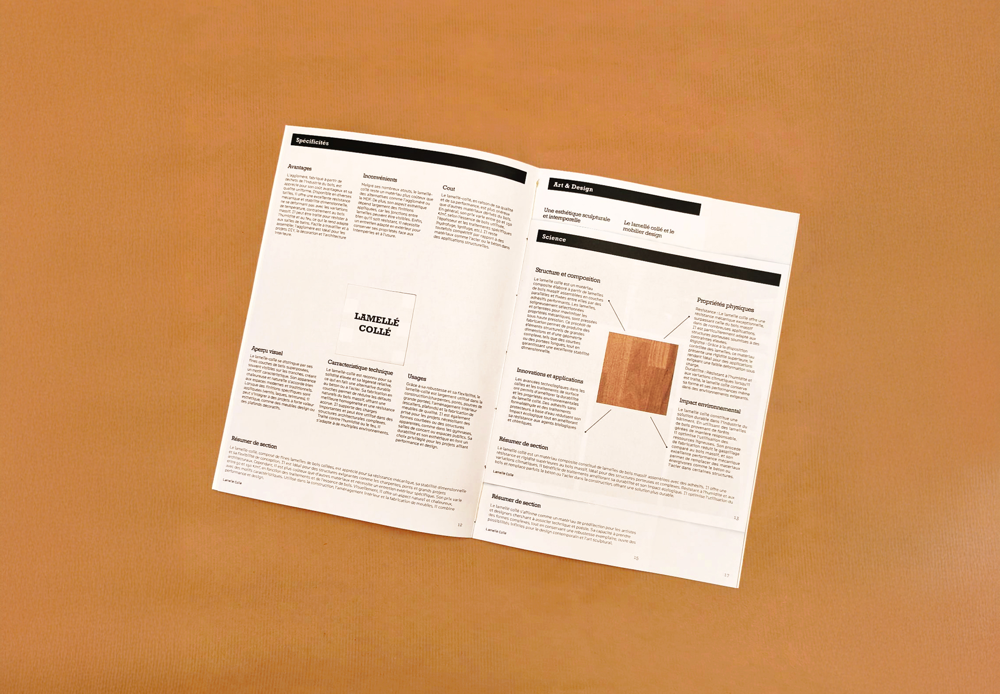
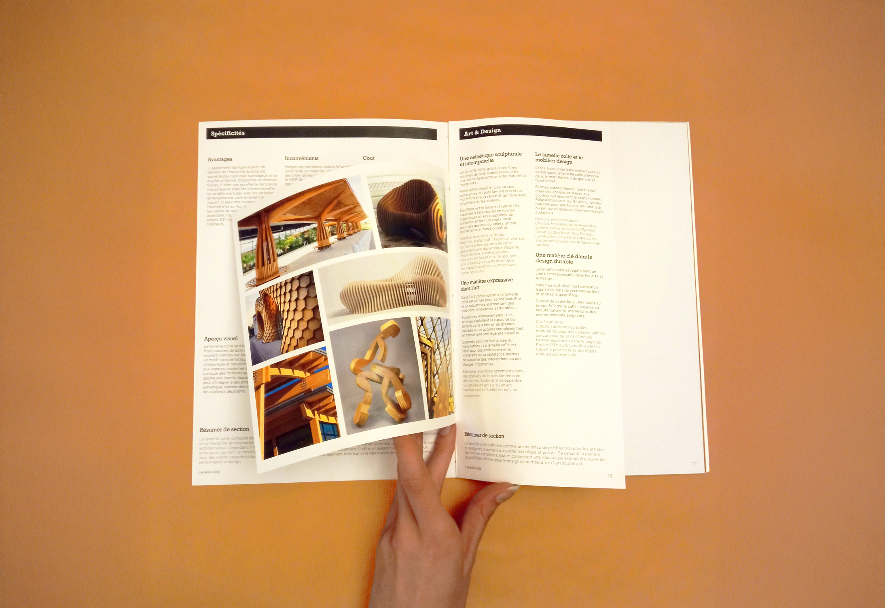

Le projet consiste à concevoir l’identité graphique de la collection MATÉRIOH ! pour la Cité du design et l’ESADSE, et de créer un outil pour aider les designers à comprendre les matériaux et leurs transformations.
La couverture met en scène une trace d’encre, exprimant l’authenticité brute du matériau par un contraste noir et blanc percutant. Reprise en quatrième de couverture, cette esthétique souligne la nature non linéaire des ouvrages. Un bandeau inspiré des revues scientifiques apporte une touche de rigueur et met en avant des informations clé. La typographie traduit les propriétés des matériaux (Rockwell pour la solidité du bois, Athena pour la précision du métal et Lucida Bright pour la souplesse du textile). Enfin, le choix du papier enrichit l’expérience sensorielle : gaufré pour évoquer la texture du bois et du textile, brillant pour rappeler l’éclat du métal.
La maquette adopte une structure didactique par des variations de formats matérialisant la transformation des matériaux tout en hiérarchisant l’information. Chaque format correspond à une catégorie précise (ex : format carrée = science). Le sommaire reprend le principe du bandeau de couverture, mais en noir, et l’on voit une version « taillée » et transformée du matériau. Chaque nouveau matériau apparaît d’abord en pleine page, avec sa texture brute. En tournant la page, cette texture est échantillonnée, comme analysée de plus près.






